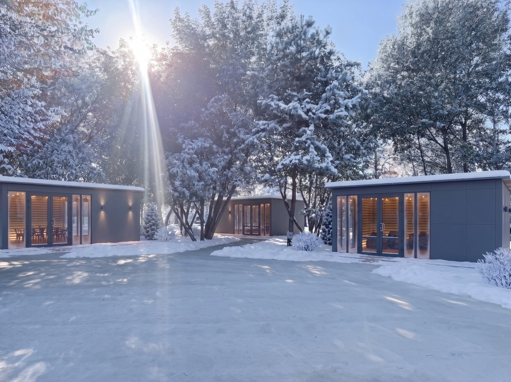
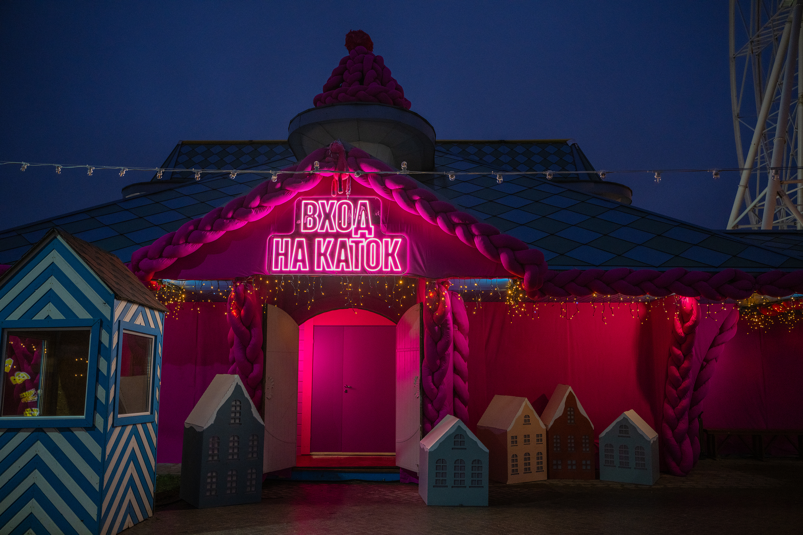
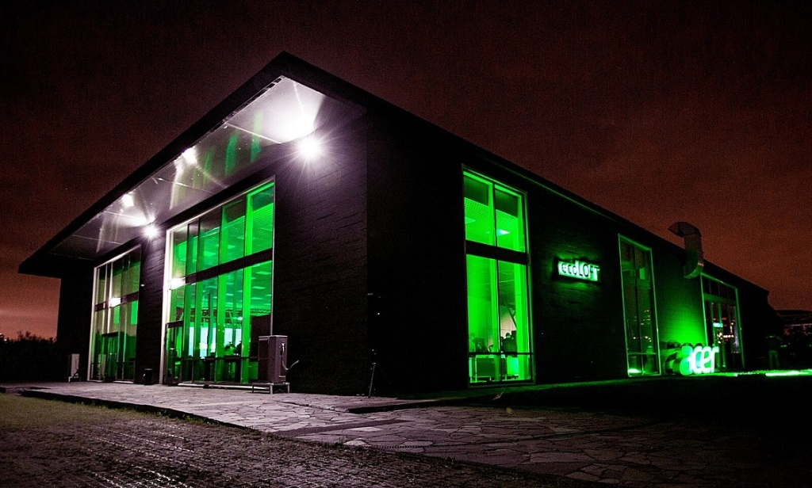
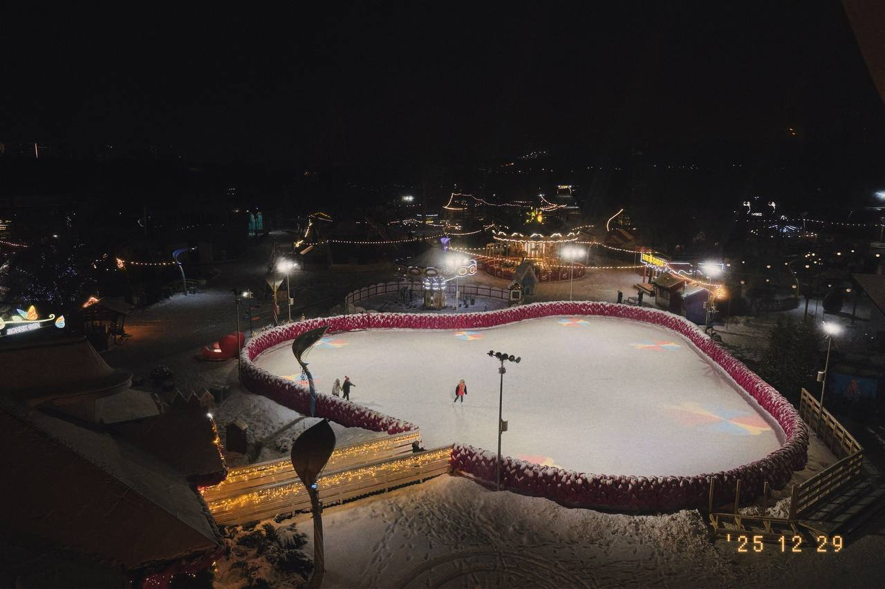
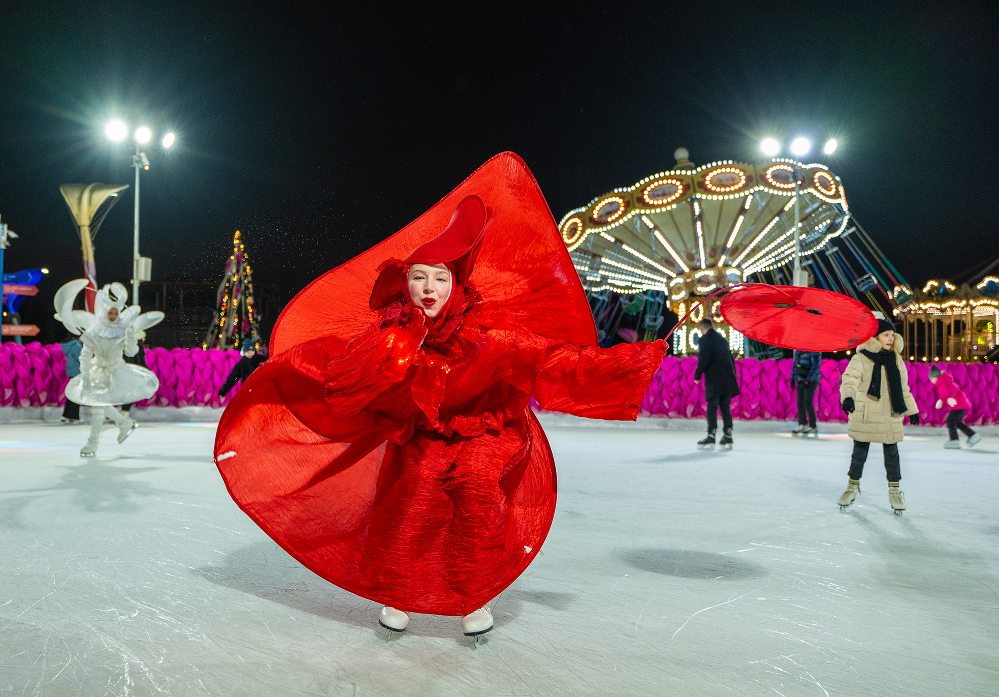
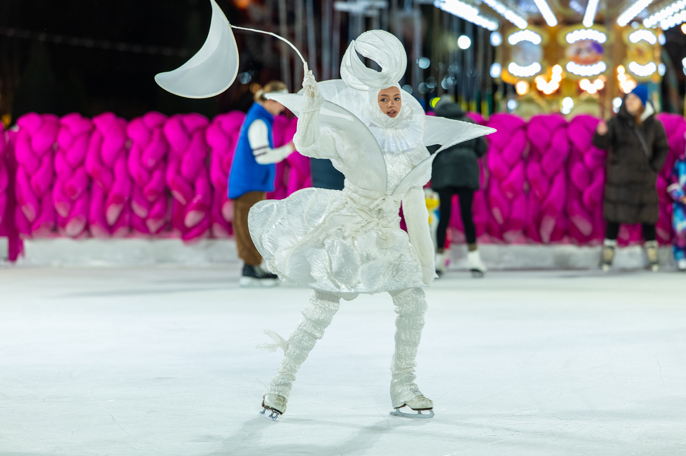
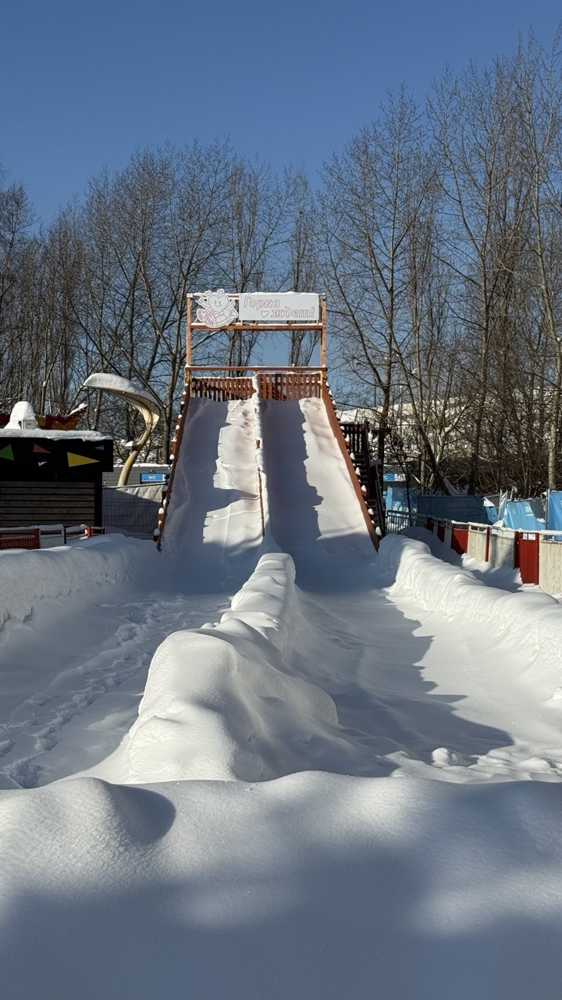
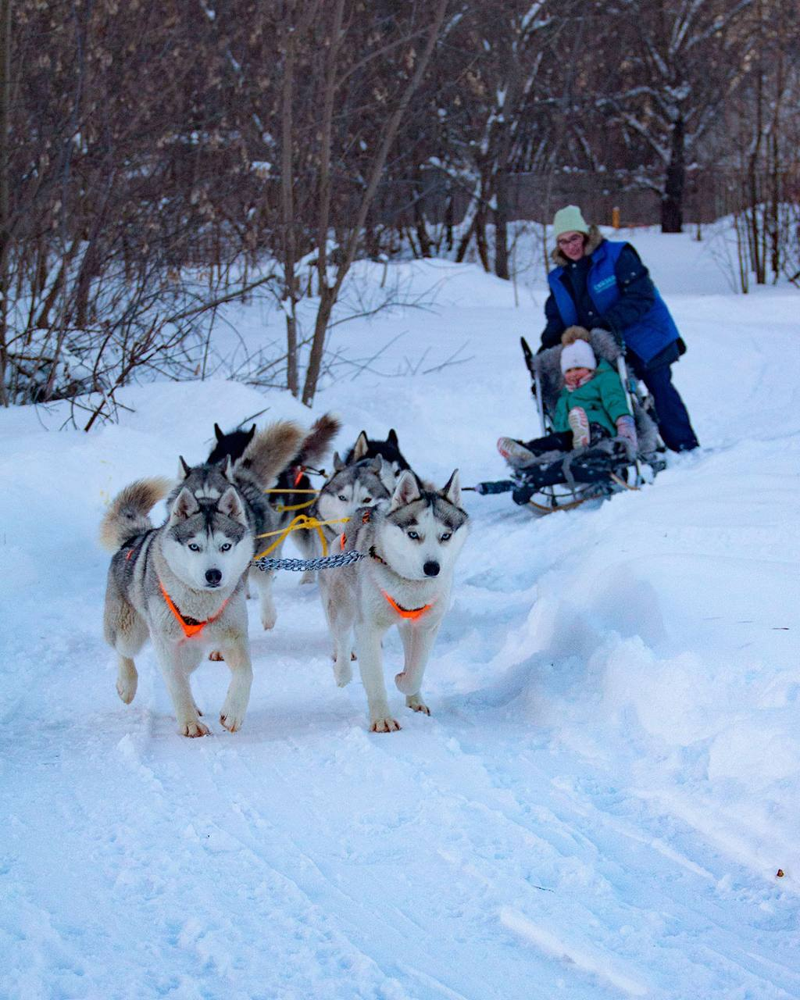
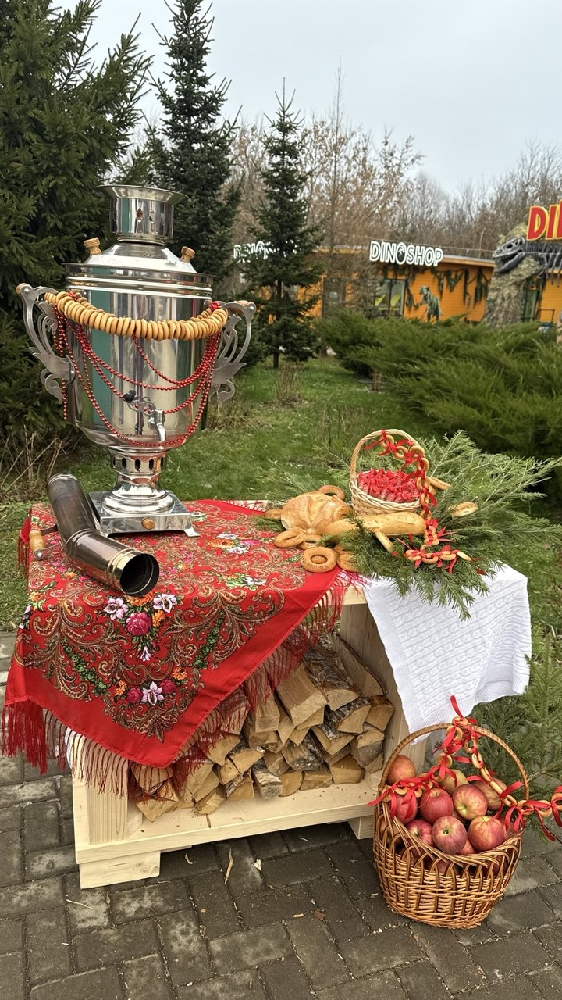
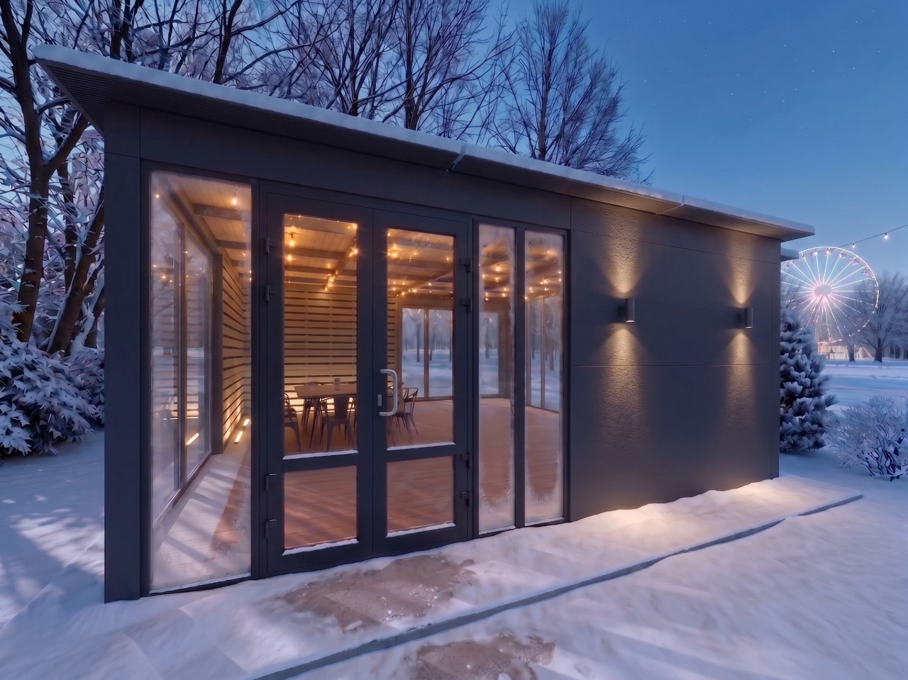

01
Беседки рядом с лофтом
Место для отдыха, разговоров и тёплых пауз между активностями. Беседки становятся уютной базой вашей ярмарки.
Включены в предложение
СПЕЦИАЛЬНО ДЛЯ STYLE PROJECT
Собрать коллег под огнями парка.
Согреться у ярмарочных станций.
Встретиться на льду.
ПРАЗДНИК, В КОТОРОМ ХОЧЕТСЯ УЧАСТВОВАТЬ
Предложите клиенту собственную новогоднюю ярмарку в парке: с горячими блинами, ароматом гриля, катанием на коньках и общением в лофте и обогреваемых беседках.
Гости выбирают свой ритм: общаются, пробуют блюда уличных станций, выходят на лёд и возвращаются согреться. Всё на одной территории в Москве.
ПРОСТРАНСТВО ПРАЗДНИКА
Размещаем гостей в формате свободного перемещения между лофтом, обогреваемыми беседками и катком.

Место для отдыха, разговоров и тёплых пауз между активностями. Беседки становятся уютной базой вашей ярмарки.
Включены в предложение
Просторный зал для общей встречи, поздравлений и общения. Объедините зимние активности с комфортной программой в помещении.
Лофт, сцена и звук включены
Каток добавит движению вечера настоящую зимнюю атмосферу. Катание с 18:00 до 22:00 можно чередовать с ярмаркой и отдыхом в лофте и беседках.
Аренда катка включенаДля 400 гостей предлагаем свободное перемещение между зонами; схема рассадки согласуется отдельно. Каток: 18:00–22:00, прокат коньков, помощники на льду и фоновая музыка включены. Лофт арендуется на сутки: монтаж 05:00–10:00, окно мероприятия 10:00–22:00, демонтаж 22:00–05:00. Точный тайминг программы согласуется отдельно.
МЕСТО, ГДЕ ЖИВЁТ ЗИМА
У парка уже есть свой праздничный характер. Добавьте к нему сценарий вашей компании: встречу гостей, общение на свежем воздухе и ярмарочные развлечения.
Фотографии показывают атмосферу площадки. Артисты и специальное оформление подбираются дополнительно.


ДОБАВЬТЕ СВОЙ СЦЕНАРИЙ
Опции заказываются отдельно и не входят в базовую стоимость предложения.
Встреча гостей, игры и вовлечение в праздничную программу.
Стоимость по запросуМузыкальное сопровождение под настроение вашего события.
Стоимость по запросуЗимняя активность для тех, кто любит движение.
Стоимость по запросуЗимнее приключение с северными собаками.
Стоимость по запросу


Доступность тюбинга и катания на хаски зависит от погоды, снежного покрытия и режима работы. Программу, продолжительность и условия участия подтверждаем на выбранную дату.
ПРЕДЛОЖЕНИЕ ПО СМЕТЕ
24 декабря 2026 года
Каток: 18:00–22:00

ПРЕДВАРИТЕЛЬНАЯ СТОИМОСТЬ ПО СМЕТЕ
2 276 520 ₽
≈ 5 691 ₽ на гостя при 400 участниках
Сервис включает обслуживание, одноразовую посуду, салфетки, коктейльные столы и скатерти. Стоимость катка предварительная. Дополнительные развлечения и невыбранные блюда рассчитываются отдельно.